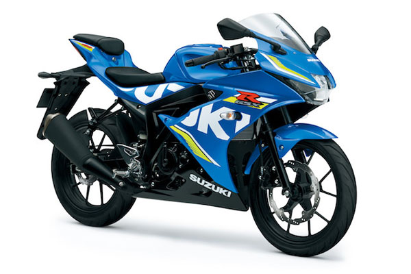

GSX-S150 đích thực là một tuyệt tác nghệ thuật, với phong cách mạnh mẽ và hấp dẫn. Kiểu dáng đẹp, thân xe mạnh mẽ không chỉ mang lại cảm giác trải nghiệm tuyệt vời về tổng thể mà nó còn làm cho xe nhẹ nhàng hơn so với các dòng xe cùng phân khúc và giúp người điều khiển dễ dàng và linh hoạt hơn trong điều kiện đường xá giao thông chật chội.
Động cơ 150cc, 4 thì, làm mát bằng dung dịch, DOHC cho công suất đầu ra mạnh mẽ và khả năng tăng tốc vượt trội cũng như vào số êm ái. Động cơ đã áp dụng thành công trên Raider Fi Thế hệ Mới.
Cụm đèn pha LED theo chiều dọc tăng độ sáng nhưng vẫn tiết kiệm nhiên liệu.
Đèn hậu được trau chuốt tỉ mỉ kết hợp với đèn chắn bùn, bền hơn với khả năng chống rung lắc.
Bình xăng được trạm chổ với sự tinh tế trong từng đường nét.
Công nghệ SCEM giúp giảm ma xát, tăng độ bền và duy trì hiệu năng ổn định.
Sự ổn định một cách đáng kinh ngạc của GSX-S150 trên đường cao tốc, linh hoạt trong các khúc cua và được đi kèm với một khung gầm hiện đại, cứng cáp. Khung sườn dạng ống thép là sự kết hợp giữa việc tối ưu độ cứng xoắn với trọng lượng nhẹ nhàng. Xe có chiều dài cơ sở 1,300mm với trọng lượng chỉ 133 kg, và độ cao yên 785mm, giúp việc chống chân một cách thoải mái mỗi khi dừng lại.
Hệ thống ống xả hiệu suất cao với bộ xử lý đạt chuẩn khí thải Euro 3, góp phần bảo vệ môi trường.
Nắp khóa xoay tích hợp công nghệ thông minh giúp việc khởi động dễ dàng không cần lục tìm chìa khóa.
Phuộc sau đem lại cảm giác an toàn và ổn định.
Khởi động dễ dàng và nhanh chóng với một lần ấn nút sẽ tự động khởi động máy, không cần nhấn và giữ nút đến khi động cơ nổ máy.
| Hệ thống van | DOHC 4 – van |
| Số Xy – lanh | 1 xy – lanh |
| Loại động cơ | 4-thì, làm mát bằng dung dich |
| Đường kính X hành trình piston | 62,0 mm x 48,8 mm |
| Dung tích xy-lanh | 147,3 cm3 |
| Tỉ số nén | 11,5 :1 |
| Công suất cực đại | 14,1 kW / 10,500 vòng / phút |
| Mô-men cực đại | 14,0 Nm / 9,000 vòng / phút |
| Hệ thống bơm xăng | FI |
| Hệ thống khởi động | Điện/Cần đạp |
| Bình điện | 12V-5Ah |